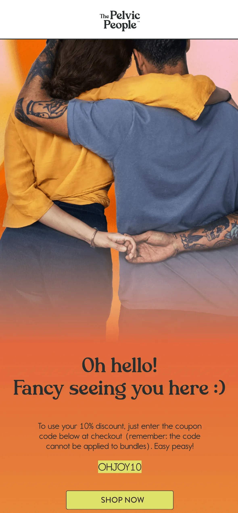
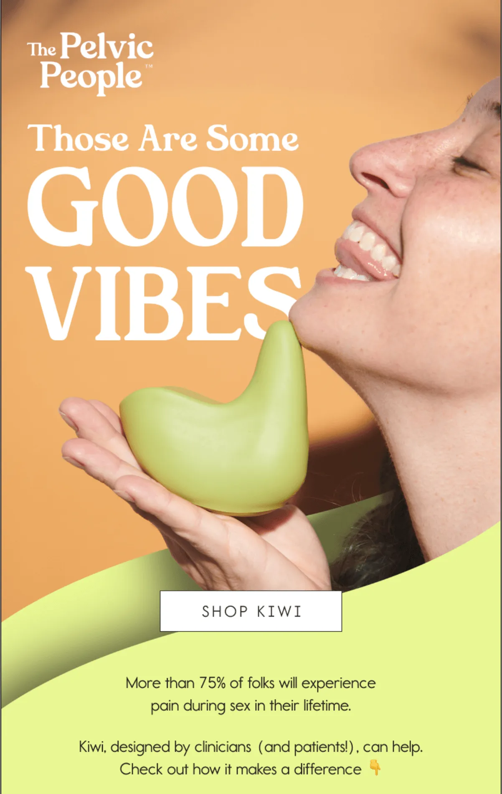
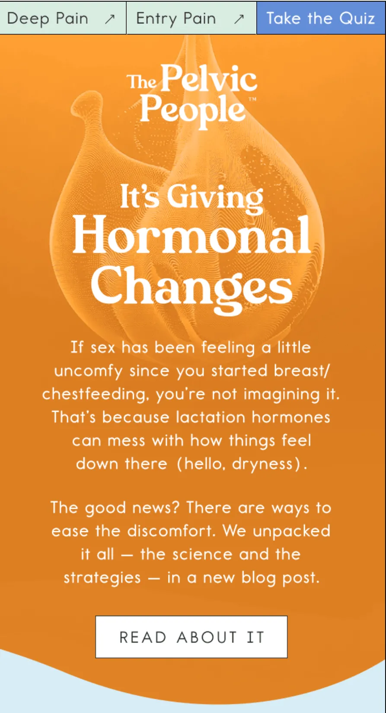
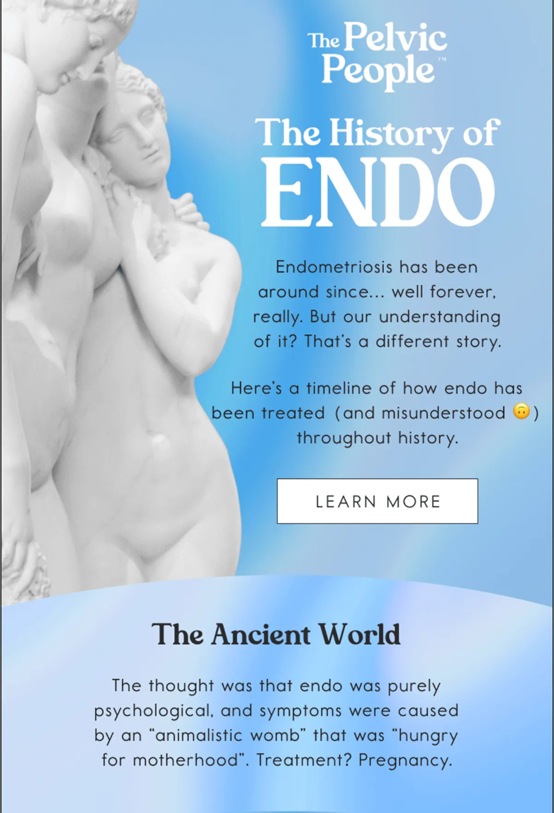

How do you talk about intimacy, pain, and sexual wellness in an email without making people uncomfortable? The Pelvic People manage this with thoughtful design, inclusive language, and emails that strike a balance between education, empathy, and product in a way few DTC brands attempt.
In this episode of Feedback Friday, Matt Helbig and Kasey Luck review a series of Pelvic People emails together. They break down the design choices in real time, discuss how the brand builds trust with its audience, and explore how longer, more educational emails can actually drive stronger engagement and conversions.
If you work in email marketing, DTC, or brands operating in sensitive categories, this episode offers valuable insights into how to communicate with care, clarity, and confidence in the inbox.
TL;DR
- Longer, educational copy can outperform short promos for the right audience.
- Live text, spacing, and readability matter even more in text-heavy emails.
- Social proof from clinicians builds trust beyond customer reviews.
- Thoughtful opt-downs and inclusive messaging strengthen long-term subscriber relationships.
Matt Helbig: What’s up, Email Geeks? Welcome back to another episode. We are joined once again by a friend of the show, Kasey Luck. How’s it going, Kasey?
Kasey Luck: Hey Matt, thank you so much for having me. It’s going great, excited to be here.
Matt Helbig: We have some cool-looking emails this week, a little outside the normal brands we typically cover. I’m excited to jump in and learn a little bit from you about these emails.
Kasey Luck: My name is Kasey, as Matt just introduced me. I run Luck & Co Agency. We do email and SMS for e-commerce brands.
This is still an e-commerce DTC brand, but it’s definitely very different from any other e-commerce brand you’d encounter. They sell sexual wellness products. Something that’s a really important distinction here is that it’s not sex toys. Its products help with various issues that people experience during intimacy. This brand was previously called Ohnut, because that was the hero product that they started with. This one, yep. That’s what the brand used to be called, but they introduced another hero product, Kiwi, which we see a little bit higher up. So they rebranded as The Pelvic People. Generally, their mission is to help individuals experiencing intimacy issues or pain find a solution.
Matt Helbig: Yeah, I like this one. I think they do a really good job of making what can be a more taboo subject feel more approachable. It feels like you don’t have to feel any shame around this or anything like that. I really appreciate the inclusivity in the product messaging and their marketing efforts. It’s really nice to see.
Kasey Luck: One thing that was very important to The Pelvic People team when they were discussing a partnership with us was that their relationship with their email subscribers was a significant brand asset. Before working with us, they had been handling email in-house and sending a large number of educational emails. They didn’t send emails very frequently, but the ones they did send were very meaningful and often not overly product-focused; instead, they were educational. They had that relationship with subscribers where people would reply to the emails and share their stories. They had that connection. I can understand how it’s very scary for a brand to bring in an agency, an external partner, and give that relationship to an external team. One of our key objectives was to preserve the relationship they had with their subscribers while also improving performance and generating additional revenue. It’s a delicate balance of education, engagement, and product promotion, all while selling. That’s what we’re going to see across these emails. For context, this is a welcome email that was created by their in-house team. It wasn’t created by the Luck & Co team, but the rest of the emails we’re going to see for this brand were created by our team.
Matt Helbig: Cool. First, I really like this imagery. It doesn’t really feel staged. It’s not the typical kind of imagery you might associate with certain products. That emotional connection is a nice way to lead into this messaging. I really like the contrast of the orange and yellow. It makes the CTA pop out. As we were talking before this episode, it would be great to see some of this as live text, especially something like a promo code. If it’s not live text, I’m unable to copy it from the email to use the discount. Some of those accessibility pieces would be nice to see. But leading down into the messaging, it’s pretty clear what people want me to do.
Kasey Luck: Yeah, I think one challenge for them is that part of the brand’s visual identity is these gradients in the background. It would probably be difficult to match the background color if we’re doing live text to fit into that gradient. That’s probably a choice they had to make in this email. I agree it would be great to have the code be copy-pastable. Copy-and-paste ability is more important for conversion, but accessibility is also crucial.
Matt Helbig: Scrolling down, I think we’re hit with a lot of text. For some people, this may be the ideal time to receive this information. Often, landing pages are better suited for presenting all this text, allowing people to delve deeper into product details. It does sound like personal recommendations. Is that based on some data? Do they fill out a survey, or is it browsing data?
Kasey Luck: It’s based on the pop-up. It’s something we recommend to all brands when we manage pop-ups and flows. We also recommended this to them. In the pop-up, we ask questions that help us personalize content for that subscriber and make it easier to sell to them based on what they’re looking for. In their pop-up, they ask what you need help with: entry pain, deep pain, both, or just browsing. This email is intended for someone who has chosen both. So, for entry pain, Kiwi is the primary product that helps alleviate it. For deep pain, it’s Ohnut. That’s why we see both products in this email.
Matt Helbig: For some sections of this text, I would like to see a table or some iconography to help tie the message together, making it easier to read. Obviously, this information is important, but perhaps there’s a more concise way to convey the key points and then provide additional details on a landing page.
Kasey Luck: Yeah, I can see that. It’s definitely one of the biggest challenges with brands like this. People need this information and are looking for it, but dumping it all at once can be daunting. People might think they’ll come back to it later when they have more time, and then they never do. Finding a way to say everything we need to say in a visually engaging way is a never-ending challenge.
Matt Helbig: I really like this section. The pack idea is smart, and the bottom section makes sense. I appreciate how the email concludes and the footer, which encourages people to feel good about their purchase with various callouts. Overall, I like this layout and order. It feels like a design trend we’ve seen in a few places. If it made sense dynamically, maybe only showing one product if someone hadn’t selected both options could shorten the email. A shorter email might perform a bit better, but overall, I like this one.
Kasey Luck: I know they’re not managing their flows with us. The in-house team is handling that, and they’re running several A/B tests on this. I wonder if they’ve tested something shorter. If not, that’s a great test.
Matt Helbig: Cool. Next email here, hopefully this is one you made.
I really like your use of customer quotes as subject lines. I haven’t seen many people do that, but it makes a lot of sense. You’ve said in other videos that using the language your customers use connects them more to the email, and I think that’s really smart. Some stakeholders believe they know how to discuss their product, but actually using the language customers use, pulled from reviews or FAQs, makes a lot of sense.
Kasey Luck: Yeah, we’re huge on using customer language and how shoppers think about the product and category.
Matt Helbig: Cool. There’s a nice, eye-catching hero text here that flows right into the CTA, which is really smart. I also appreciate how the image is integrated into the CTA, with reviews displayed immediately below. Is there anything that stands out to you?
Kasey Luck: For context, Kiwi was still a relatively new product at this time. There was a lot of product education needed, and it was very important for the brand to make sure people understood this is not a sex toy and that it’s made for pain. That’s why pain is repeated often. We also leaned heavily on social proof, both from reviews and clinicians, which was important. What stands out to me is that the line spacing on the text feels a little tight. It makes it harder to read, especially in the reviews. That would be my main note.
Matt Helbig: Yes, I think it might be an issue with font weight or the fact that it’s not live text. The color contrast is fine, but the font used here differs from that of the website, which makes it a little harder to read.
Kasey Luck: I think it might just be a matter of line height. If we reduce the line height… I won't comment on the font choice because it’s likely a brand font they want to use, and there isn’t much flexibility there. Maybe it’s the weight or something about the font. It feels a little off, a bit funky.
Matt Helbig: When you’re asking someone to read a lot of text, they might skim over it. As long as it’s readable, that’s the main thing. As you said, bringing in some additional elements really helps. Bringing in a professional here, this clinician, that’s a really powerful element. That ties everything together. It demonstrates social proof, and I've noticed that other brands do this really well. It’s smart to demonstrate that it’s not just other customers who think the product is good, but also that it’s backed by professionals. I think it answers many of my questions as I review this email.
Kasey Luck: And for other brands where this is relevant, being able to use this person’s photo is incredibly helpful. It would be much harder to do this if we couldn’t use her photo. Having the right assets available makes a significant difference.
Matt Helbig: A founder photo or something similar can also be beneficial sometimes. I also like this gradient transition into the product shot here. It’s a smart way to end the email, and it makes sense as a little upsell or cross-sell.
Kasey Luck: This ties really well into what I said earlier about trying to connect with this audience and provide all the information they need. Something else we heard from the brand when we started working with them is that longer copy actually resonates well with this audience, and that’s what they want. As e-commerce email marketers, we’re often skeptical of that, so we tested it. And it’s true. This audience actually converts and clicks more when the email is longer, which is counterintuitive and very different from most e-commerce brands. Tying this back, one of the things we were trying to do was maintain all of that while also selling more. That’s where the cross-sell comes in.
Matt Helbig: We’re always trying to make the sale. But you’re right, there’s no one-size-fits-all approach to email marketing. One thing we always say is to test with your audience. Just because you see a trend or someone gives advice online doesn’t mean it will work for your list. You really have to test and see what works best for your audience. Alright, moving on to the next email.
This is a nice one with some different details. Initially, this one is a little hard to read for me because the text is centered across multiple lines. I think it’s about six lines here. Centered text over that many lines can be harder to follow. What are your thoughts?
Kasey Luck: I remember when you hosted that live event, A Single Slice, in San Francisco with your partners. Logan kept saying how this was really bad.
Matt Helbig: We won’t judge the email just yet, because there are some cool parts of it that I really like.
Kasey Luck: For additional context, this email is about lactation and was sent during the Mother’s Day period. This was one of their Mother’s Day emails, and it’s a great example of how this brand communicates in a way that truly connects with its audience. Rather than relying on generic e-commerce language, this isn’t what you typically see from brands during Mother’s Day. This campaign resonated really well with the audience, which reinforced what we had already learned from A/B testing: their audience is very specific, and this is what they appreciate. Not a generic “Mother’s Day, here’s 10% off Kiwi.”
Matt Helbig: I like this. Usually, I’m not a fan of the Z-pattern layout, but locking it up with rounded corners and making it feel more like a card makes it much more visually appealing and consumable. If this didn’t have a white background and instead just continued the blue background, it would be much less effective. This card-style layout works exceptionally well here, even on mobile devices.
Kasey Luck: I agree. I’m also not a huge fan of that layout in general.
Matt Helbig: I’m always unsure how many zigs and zags are too many. Is it three? Is it four? But this one works. Then, linking the CTA color back to the design in this section is a smart touch. I really like this lockup. It feels strong. I also like this opt-out option. It’s nice to see that they’re paying attention to their audience and acknowledging that this topic may no longer be relevant to everyone. It’s more of an opt-down rather than a blanket unsubscribe, which is thoughtful.
Kasey Luck: Yes, we’re always mindful of which topics are relevant or potentially triggering for some people. For this audience, experiencing pain during intimacy can be very sensitive. Finding ways to stay relevant and helpful is really important.
Matt Helbig: Alright, last one here. This is a fairly lengthy and interesting email. Tell me about this one. This one is a “through-the-ages” style email.
Kasey Luck: I’m going to rely a bit on notes from the strategist who works on this account. Most of their audience experiences health issues and tends to be sensitive about them, which we’ve mentioned. Endometriosis is one of those conditions. It’s very common, but it can be difficult to diagnose and discuss. I actually have a friend who had undiagnosed endometriosis for most of her life. People like that struggle a lot. It’s constant pain, and no one can tell you what’s wrong. This email condenses one of their lengthy blog posts into a storytelling email that guides readers through the history of endometriosis, also known as “endo” for short. There is a link to the blog post, which is very important. From there, we transition into the products in a way that feels natural within the storytelling, and we introduce them without it feeling forced. We also include an advocacy block at the end. This was tied to a newer product category they introduced: merch. It’s all about advocacy, and tying that into the narrative was one of the goals of this email.
Matt Helbig: I like this one. Ideally, it would be live text, but if that’s not possible, the imagery works well. We’ve seen numerous trends where timelines or scrolling narratives help keep people engaged. I really like the asides; they add a personal touch to the brand. On both mobile and desktop, it works well as you scroll through the story. It sets up background and context, and then positions the product as part of the solution. That formula works well here.
Kasey Luck: It’s long, but still much shorter than the blog post. The copywriter clearly had to work hard to decide what to keep and how to make it readable.
Matt Helbig: To me, this works better than pasting the entire blog post into a newsletter. This section is a smart transition into a clear product lockup. It’s obvious what action you’re meant to take. Nice one. Thank you for taking the time to review these. They’re definitely a bit different from what we’ve reviewed in the past, but that’s what makes them interesting. Many of these emails have been performing exceptionally well. I always enjoy the challenge of working with more sensitive topics. Email is flexible, and when you really think about the people you’re communicating with, you can make the message feel relevant by putting yourself in their shoes.
Kasey Luck: Exactly. That’s one of the reasons I love email. You can’t really do this kind of storytelling as effectively in ads. Maybe in social video or stories, but that’s a different format. Email is great for building relationships with subscribers in the right way. It’s always a challenge, but a very fun one, working with brands like this. If this feels relevant, check out The Pelvic People. They’re really cool.
Matt Helbig: We’ve been working on a tagline: “Build relationships, not lists.” At the end of the day, you’re sending emails to real people. They have real problems, and your product might solve them; how you communicate that is part of your job. Thanks again, Kasey, for taking the time. I really appreciate it. Have a great rest of your week.
Kasey Luck: Thank you. This was fun. See you. Bye.